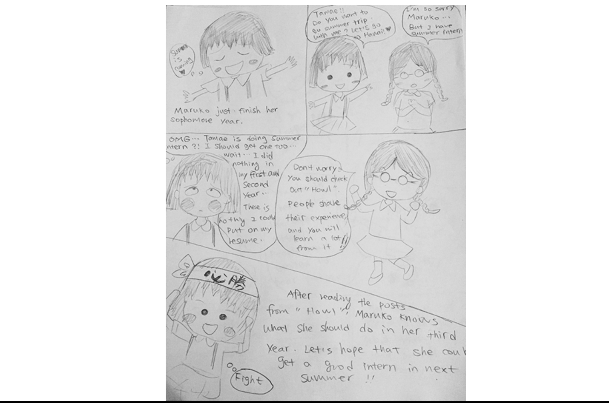
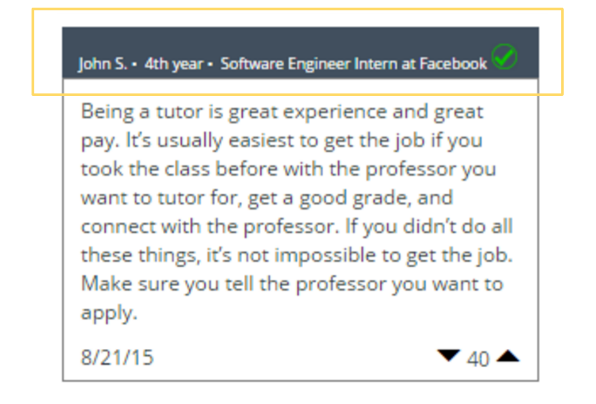

Storyboarding

User research
Use cases

Initial prototypes

Parallel prototyping
We showed validation of reviews by showing information about the reviewers.
About: Howl is a mobile app designed to meet the needs of undergradudate students looking for helpful advice from their peers on how to build successful career paths. Inspired by Yelp's review system, Howl collects advice from students who have gotten jobs and internships related to their fields of study, so that their peers can see and learn from the paths that they took to achieve success.
Role: UX Designer
Duration: August-September 2015
Collaborators: Xu Cheng, Tracy Nham, Ryan Tomimitsu
Type: Mobile Application
Tools Used: Photoshop, JustInMind Prototyper, HTML, CSS, Javascript, Bootstrap
Methods: Needfinding, Storyboarding, Wireframes
Visit Howl